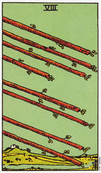

权杖八意味旅行及自由流动的能量。
在权杖八中，描绘的权杖并没有植入土地，也没有被人握住。这象征自由流动的火的能量，很少或没有限制。它代表当你恋爱或旅行时，你可以体验到对生命的热情和挚爱。
权杖八表示你的目标清楚可见，而且正轻松的向它们迈进。这点可以从八根权杖自由而无约束的掠过天际看出来。权杖越过水上，暗示海外旅行，是权杖类型的人十分喜爱的。
权杖八代表健康的人际关系、跨海旅行和计划达成令人满意的结局。它指出你能轻松地完成目标。权杖八出现时，你的计划会碰到的阻碍是微小的，既定的目标无需太多的努力也能达成。
“八”是代表力量的数字，纸牌的数字是八，显示这一组牌的力量所在。在权杖八里面，你可以看到火的元素呈现自然状态，一种无所限制的、狂热的行动。
大体上的意义
权杖八没有拘束的本性反映了这是很少阻碍的时机。它表示你是自由的、可投注热情、直接追求目标。
权杖八经常出现在你即将到海外旅行时。它也代表你所有的努力将会得到回报，也将从困难中解放出来。
在生涯上的算法中，权杖八可以表示和事业有关的旅行，或是当个驾驶员，或是开发新的供应商或市场。这是八支权杖越过水上的暗示。
两性关系上的意义
权杖八在两性关系的算法中是相当正面的。它说明你和你的伴侣一起享受生活，无需受困于各种难题。她表示你们喜欢彼此为伴，没有恐怖或约束。
有个这样的例子是发生在卡伦的占卜中。当她来占卜时，她的伴侣麦克刚完成两年全天的学业，他们准备到威尼斯度假五周。权杖八暗示他们将能完全的享受这趟旅行(四周后我收到寄自威尼斯的明信片证实这点)。权杖八代表一个探索生活的机会，包括探索周遭环境和对方。
权杖八同时也只是你的两性关系是健全的，因为两人有足够的空间可以拥有自己的生活和朋友。
倒立的权杖八
倒立时，权杖八表示没有任何土地可以让火立足，或让火的狂热朝一个实际结果发展。它代表一个没有达成预期的结局的情境。火(热情)没有土(实际)，可预见计划不能实现――单只有热情是不够的。
当纸牌是倒立时，它暗示你尚未学会前一张纸牌的课题。在此，你还没精通权杖七中的内含课题，权杖八的倒立是暗示你必须回到权杖七，去理解不屈不挠的意义。
倒立权杖八象征延误，像是未解决的阻碍(来自权杖七)一在重现而使你慢下来。回到权杖七(不屈不挠)的课题上，你能克服那些难题或挑战，并且找出通往正立的权杖八的方法。
倒立的权杖八可以表示旅行计划的延误，或你的人际关系中的嫉妒或争吵。